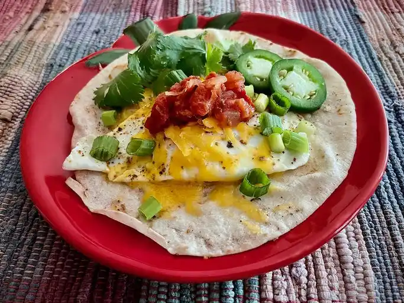

Fried egg tortilla
Description
Fry an egg, melt the cheese, and warm your tortilla all in the same pan. Add your favorite toppings–like salsa, jalapeño pepper slices, cilantro, and green onions–and enjoy a great tasting breakfast, done in a flash. Of course, you can repeat, as many times as you like, if you have company.
Ingredients
- 12 tsp butter
- 1 large egg
- 1/4 teaspoon taco seasoning, or to taste
- 1 1/2 ounces shredded Cheddar cheese, divided
- 1 (6 to 7-inch) flour tortilla
Steps
- In a 10-inch nonstick skillet, melt butter over medium heat, and swirl the pan to coat the bottom evenly.
- Carefully break egg into buttered skillet and cook until egg white is opaque and egg is firm enough to turn, about 1 minute.
- Turn egg over, being careful not to break yolk; sprinkle with taco seasoning and about half of cheese.
- Gently place tortilla over egg and cheese, and cook about 1 minute. Using a silicone egg turner, flip the egg and tortilla, as one.
- Sprinkle remaining cheese on top of the egg, and continue cooking until the egg is done to your liking and the tortilla is warm and toasty, about 2 minutes.
- Slide tortilla and egg to a serving plate and serve warm.
Back to recipes